معماری ترکیبی: بهترینهای هر دو دنیا با Supabase و Spring Boot
منتشر شده در 14 January 2026
به جای اینکه میان سادگی Supabase و قدرت Spring Boot انتخاب کنید، چرا آنها را ترکیب نمیکنید؟ یک معماری هیبریدی را کشف کنید که بهترین ویژگیهای هر فناوری را به کار میگیرد.
- ضرب
-
[]
دشواه جعلی معماری مدرن
هنگامی که یک برنامه مدرن با frontend ایستا میسازیم، اکثر اوقات به یک انتخاب دودویی میبرسیم:
-
هر چیزی را بر روی یک راهحل
Backend-as-a-Serviceمتمرکز کنید(Supabase, Firebase) - ساده اما محدود -
یک بکاند کامل بسازید(Spring Boot, Node.js) - قوی اما پیچیده
این انتخاب یک دروغین معضل است. معماری هیبردی یک راه سوم پیشنهاد میدهد: استفاده از هر فناوری جایی که بهتر عمل میکند.
دیدگاه معماری
معماری سنتی: تکبلوک
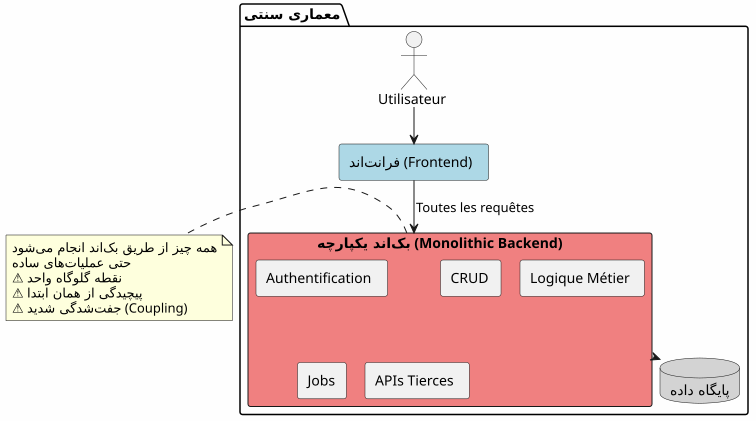
در این رویکرد، حتی عملیاتی که سادهترین هستند (خواندن یک مقاله، ایجاد یک نظر) باید از طریق backend شما عبور کنند. از اولین روز هزینه پیچیدگی را میپردازید.
معمارى BaaS : هر نماینده
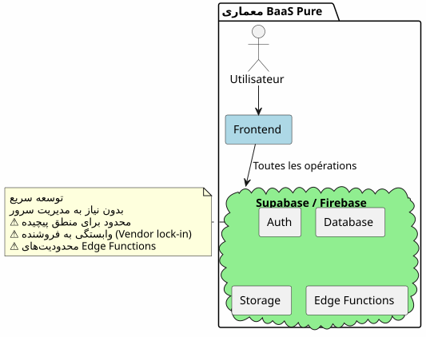
بهعکس، واگذاری تمام امور به یک BaaS در آغاز جذاب بهنظر میرسد اما بهسرعت محدودیتهایش را نشان میدهد هنگامی که منطق کسبوکار پیچیده میشود.
معماری هیبریدی : جداسازی مسئولیتها
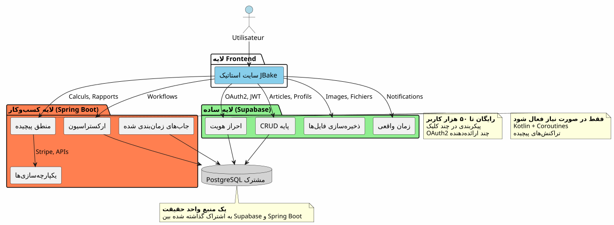
معماری هیبرید مسئولیتها را بر اساس پیچیدگی و طبیعت عملیات بهطور واضح جدا میکند.
مبادئ طراحی
مبدأ ۱ : شروع ساده، پیشرفت هوشمندانه
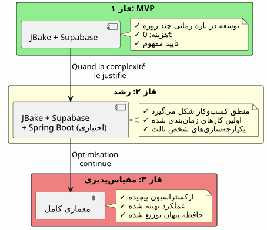
اگر به Spring Boot نیاز ندارید، آن را ایجاد نکنید.Supabase را شروع کنید؛ Spring Boot را زمانی اضافه کنید که پیچیدگی آن را توجیه کند.
اصول ۲ : جداسازی بر پایهٔ نوع عملیات

مبدأ 3: منبع یگانه حقیقت
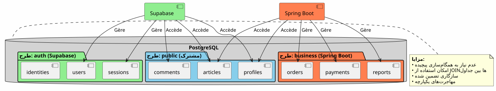
با به اشتراکگذاری همان instance PostgreSQL، Supabase و Spring Boot روی دادههای یکسان کار میکنند بدون نیاز به همگامسازی پیچیده.
همگامسازی جریانها
جریان 1 : احراز هویت مرکزی
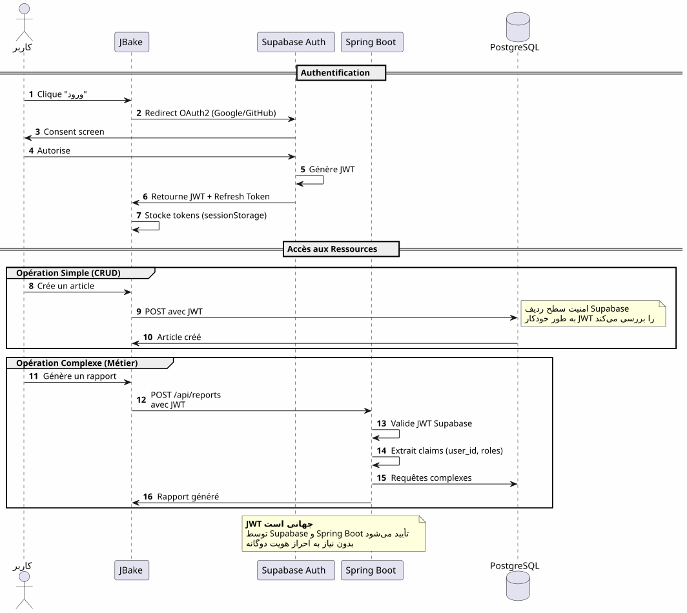
نقطه کلیدییک فرآیند احراز هویت، یک JWT، قابل استفاده در هر مکان.
فلو 2 : همگامسازی یک فرآیند تجاری پیچیده
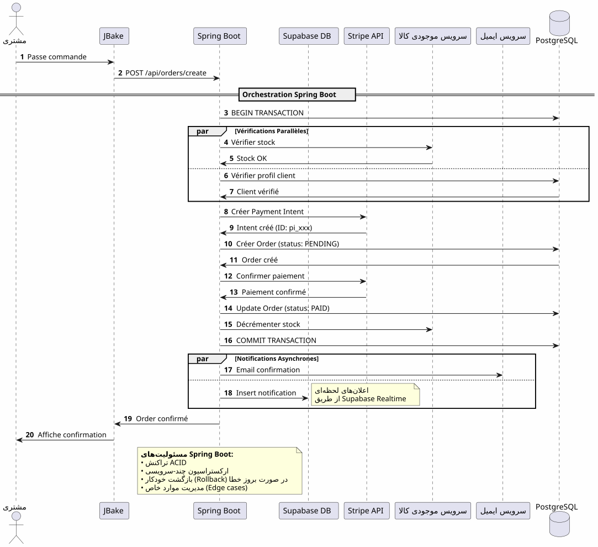
چه چیزی Spring Boot ارائه میدهدهمگامسازی قابل اعتماد از فرآیندهای پیچیده شامل چندین سیستم با تضمین ترنزاکیونی.
جريان 3 : کارها برنامهریزی شده و همگامسازیها
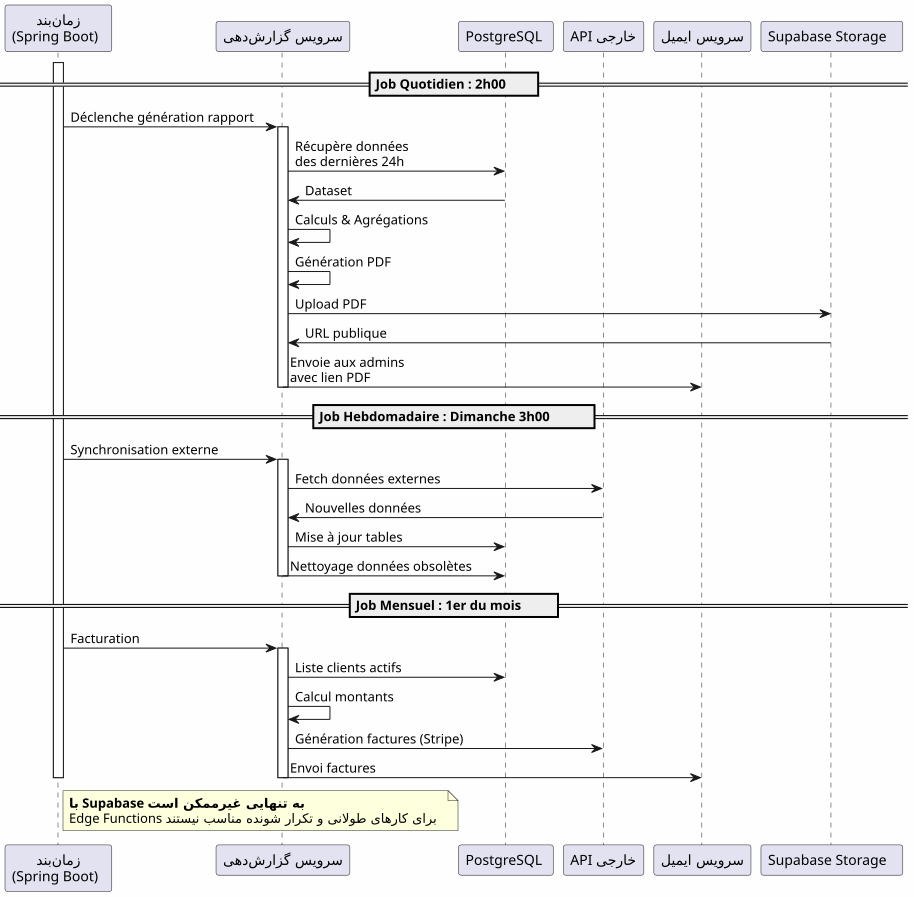
چه چیزی Spring Boot به ارمغان میآورد: کارهای برنامهریزیشده قابل اعتماد با مدیریت وضعیت، تلاش خودکار و اجرای تضمینشده.
ماتریس تصمیمگیری
Supabase چه زمانی استفاده شود؟

زمان استفاده از Spring Boot؟

نمونههای معماری بر اساس نوع پروژه
وبلاگ / نمونهکار
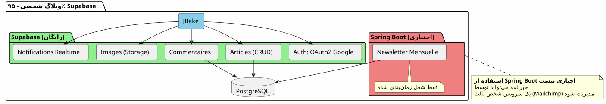
حکم: 100% Supabase کافی است.
برنامه SaaS
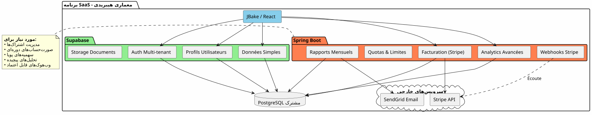
حكم: معماری هیبریدی لازم است. Supabase برای بخش اصلی، Spring Boot برای بخش حیاتی (پرداختها، صورتحساب).
تجارت الکترونیکی

حکمSpring Boot ضروری. Supabase فقط برای احراز هویت و فهرست.
استراتژی مهاجرت تدریجی
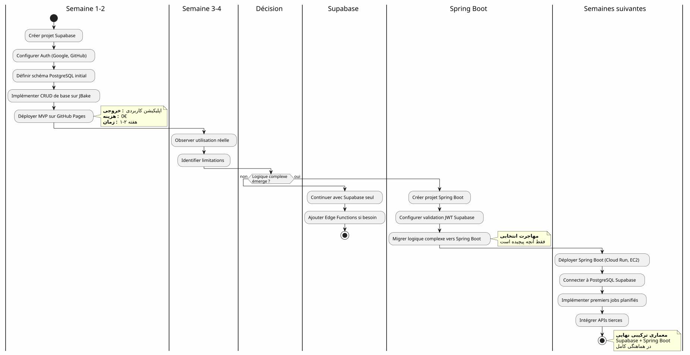
هزینهها و ملاحظات عملیاتی
ساختار هزینهها
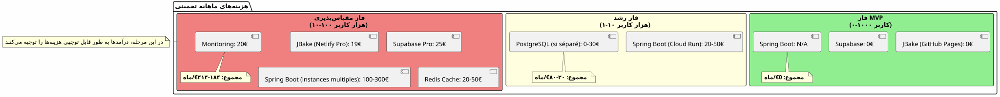
مسئولیتهای عملیاتی
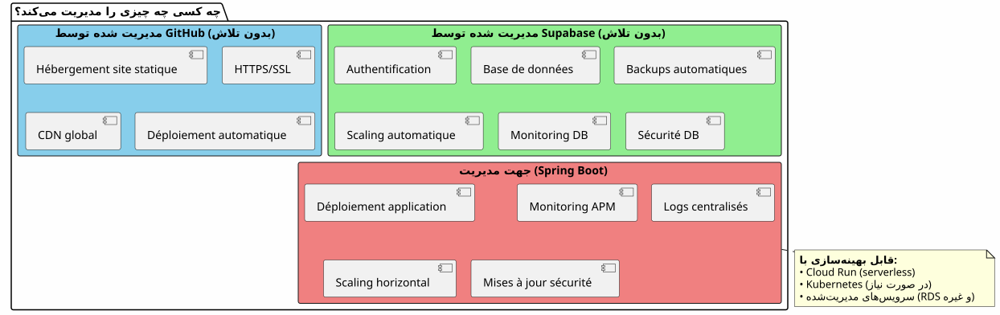
نتیجه : تعادل کامل
معماری هیبرید Supabase + Spring Boot یک توافقی نیست، این یکهمکاری.
اصولهای لازم به یادداشت

کیبای این معماری را انتخاب کنیم؟
✅ این معماری برای موارد زیر ایدهآل است :
-
شما میخواهید به سرعت شروع کنید (MVP به صورت روز، نه ماه)
-
شما یک افزایش در پیچیدگی کسبوکار را پیشبینی میکنید
-
شما میخواهید هزینههای اولیه را به حداقل برسید
-
شما PostgreSQL را دوست دارید و میخواهید منبع یکتای حقیقت داشته باشید.
-
شما Kotlin و Coroutines را برای منطق کسبوکار دوست دارید
-
شما میخواهید از قفلگیری کامل فروشنده جلوگیری کنید
❌ این معماری برای این شرایط مناسب نیست :
-
پروژه شما ساده است و چنین خواهد بود (وبلاگ شخصی → 100٪ Supabase کافی است)
-
شما یک استک بکاند پیشساخته دارید که آن را به خوبی میدانید
-
شما یک مونولیت سنتی ترجیح میدهید
-
شما به .NET، پایتون یا هر زبان دیگری سمت بکاند نیاز دارید.
بینش نهایی جامع
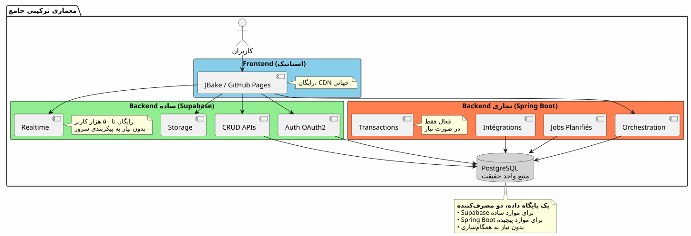
بهترین دو جهان
این معماری به شما میدهد :
🚀 سرعت Supabase
-
شروع به ساعت، نه به هفته
-
احراز هویت OAuth2 در چند کلیک
-
APIهای REST بهطور خودکار تولید شده
-
پیکربندی صفر سرور
💪 قدرت Spring Boot
-
Kotlin و Coroutines برای کد ناهمگام زیبا
-
همگامسازی فرآیندهای کاری پیچیده
-
کارهای زمانبندی شده قابل اعتماد
-
تراکنشهای ACID تضمینشده
-
اکوسیستم کامل Spring
💰 اقتصاد پیشرو
-
0€ برای شروع و تأیید
-
هزینههای پیروی از رشد
-
بدون مهندسی پیشزمانه
🎯 قابلیت معماری
-
مهاجرت تدریجی بدون بازسازی
-
افزودن Spring Boot فقط اگر لازم باشد
-
بدون قفل کامل فروشنده
-
معماری تکاملی
برای پیش رفتن
منابع فنی
مستندات Supabase :
مستندات Spring Boot :
مقالات مکمل :
-
امنسازی APIها با JWT
-
بهینهسازی عملکرد PostgreSQL
-
الگهای مهاجرت تدریجی
-
مدیریت خطاها در معماری توزیعشده
مورد استفاده واقعی
این معماری ترکیبی با موفقیت در : استفاده میشود
-
سرویس ابری بینعامل: احراز هویت Supabase, فاکتورینگ Spring Boot
-
بازارها: كتالوج Supabase، تراکنشهای Spring Boot
-
پلتفرمهای محتوا: مقالات Supabase, analytics Spring Boot
-
ابزارهای داخلیCRUD Supabase, فرآیندهای کاری Spring Boot
لیست چک راهاندازی
مرحلہ 1 - مبانی (هفته 1)
-
ایجاد حساب Supabase - [ ] پروژه PostgreSQL را پیکربندی کنید - [ ] احراز هویت را فعال کنید (Google, GitHub) - [ ] تعریف اسکیمای اولیه - [ ] تنظیم امنیت سطح ردیف - [ ] تست APIها از JBake
مرحله 2 - MVP (هفته 2-3)
-
صفحات اصلی را پیادهسازی کنید - [ ] احراز هویت OAuth2 را ادغام کنید - [ ] ایجاد فرمهای CRUD - [ ] ذخیرهسازی را برای فایلها پیکربندی کنید - [ ] قرار دادن در GitHub Pages - [ ] آزمایش در شرایط واقعی
مرحله 3 - تکامل (بر اساس نیازها)
-
شناسایی نیازهای منطقی پیچیده - [ ] ایجاد پروژه اسپرینگ بوت در صورت لزوم - [ ] تنظیم اعتبارسنجی JWT Supabase - [ ] اتصال به PostgreSQL Supabase - [ ] مهاجرت ویژگیهای پیچیده - [ ] اجرای کارهای زمانبندیشده - [ ] پیادهسازی Spring Boot (Cloud Run، و غیره)
ضدالگوهایی که باید اجتناب کرد
❌ نکنید:
-
دادهها را بین Supabase و Spring Boot کپی کنید
-
دو پایگاه داده PostgreSQL جداگانه ایجاد کنید
-
احراز هویت را خودتان کد بنویسید
-
استفاده از Spring Boot برای CRUD ساده
-
بهطرز بیش از حد معماری کردن از ابتدا
-
نادیدهگیری سطح ردیف امنیت Supabase
بهتر است :
-
به اشتراک گذاشتن یک پایگاه داده PostgreSQL
-
اجازه دهید Supabase احراز هویت را مدیریت کند
-
استفاده از Spring Boot فقط برای پیچیدگی
-
شروع به سادگی، پیشرفت به تدریج
-
استفاده از نقاط força هر فناوری
-
امنسازی با RLS در سطح پایگاه داده
منظورهای تکامل
افزودن قابلیتهای جدید
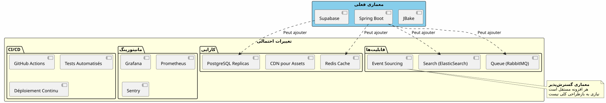
مقیاسگیری افقی
هنگامی که برنامه شما بزرگ میشود، معماری هیبریدی به طور طبیعی مقیاسپذیر میشود :
Supabase :
-
به صورت خودکار تا میلیونهای عملیات مقیاسپذیر میشود
-
Read replicas برای عملکرد خواندن
-
بازیابی نقطه در زمان برای امنیت
Spring Boot :
-
چندین نمونه پشت یک موزنساز بار
-
طراحی بیوضعیت مقیاسپذیری افقی را تسهیل میکند
-
Kubernetes برای orchestration در صورت نیاز
PostgreSQL :
-
پارتیشنسازی برای جداول حجیم
-
گروهبندی اتصالات (PgBouncer)
-
شاردینگ واقعاً ضروری است (نادر)
شواهد معماری
Startup SaaS (50k کاربران)
تمام Spanهای کد backtick (…) را بهصورت دقیق حفظ کنید — هیچگاه محتوای backtick، فاصله یا مکان را تغییر ندهید. این متن ممکن است parçهٔ یک جمله بزرگتر باشد — پارچ را بدون درخواست contextual بیشتر ترجمه کنید. فقط متن ترجمهشده را خروجی دهید — بدون توضیح، بدون نظر، بدون مقدمة، بدون گزینش، بدون گزینند. ما 100% Supabase را شروع کردیم. وقتی به 5k کاربر رسیدیم، Spring Boot را فقط برای صورتحساب Stripe و گزارشهای ماهانه اضافه کردیم. یک سال بعد، 80% از operaciones‑های ما همچنان از طریق Supabase انجام میشوند. Spring Boot فقط بخش بحرانی را مدیریت میکند. این جداسازی به ما اجازه داد تا بدون بازسازی مقیاسپذیری داشته باشیم. __
پلتفرم E-learning (10k کاربر)
(Empty output) احراز هویت OAuth2 Supabase سه هفته از زمان توسعه ما را به ما صرفهجویی کرد. APIهای خودکار تولید شده تمام فهرست دورههای ما را مدیریت میکنند. Spring Boot فقط برای گواهینامههای PDF و ایمیلهای پیشرفت استفاده میشود. معماری ساده، قابل نگهداری و مقیاسپذیر. __
Marketplace B2B (3k کاربران)
_ Spring Boot معاملات بین خریداران و فروشندگان (مهم) را مدیریت میکند. Supabase همهٔ بقیه را مدیریت میکند: پروفایلها، پیامرسانی زمان واقعی، اسناد. اینکه آنها پایگاه داده یکسانی PostgreSQL دارند، نیاز به همسنجازی پیچیدهای را رفع میکند. بهترین انتخاب معماری که تا کنون کردهایم. _
ترکیب: یک پارادایم معماری مدرن
معماری هیبریدی Supabase + Spring Boot نشاندهنده یک پارادایم جدید است :تخصص معماری.
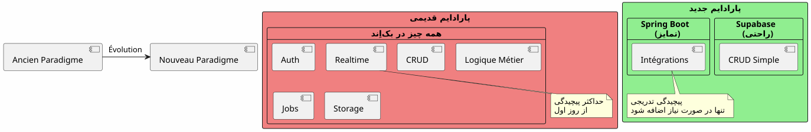
اصول اساسی :آنچه به صورت یک سرویس وجود دارد را نسازید. تمرکز کنید بر آنچه که برنامه شما را متمایز میسازد.
قانون ۸۰/۲۰
در اکثر برنامهها:
-
80% از عملیاتCRUD استاندارد → Supabase
-
20٪ از عملیاتنیاز به لوجیک تجاری دارند → Spring Boot
این قاعده طبیعی، معماری هیبریدی را توجیه میکند.
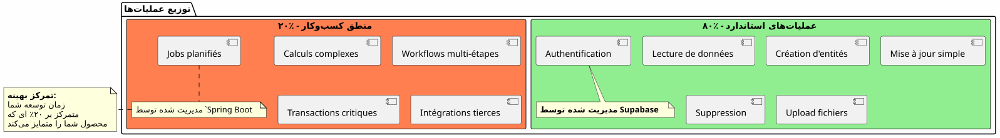
نتیجه نهایی
معمارای هیبریدی یک تناقض فنی نیست، این یکتصمیم استراتژیک.
شما را اجازه میدهد تا :
-
✅ به سرعت با یک MVP کارآمد شروع کنید
-
✅ بازار خود را بدون سرمایهگذاری سنگین تأیید کنید
-
✅ به تدریج پیش بروید وقتی پیچیدگی آن را میطلبد
-
✅ کنترل هزینههای خود را در هر مرحله
-
✅ استفاده بهترین از هر فناوری
-
✅ اجتناب از مهندسی بیش از حد زودهنگام
-
✅ حفظ انعطافپذیری برای آینده
او نمایانگر است :
-
🎯پراگرماتیک: هر فناوری که او در آن ماهر است
-
🚀سرعتحداقل زمان ورود به بازار
-
💰اقتصاد: هزینهها متناسب با ارزش
-
🔮مقیاسپذیریمعماری که با شما رشد میکند
-
🛡️ قوت: خدمات آزمایششده و قابل اعتماد
گام بعدی شما
اگر این معماری با شما صحبت میکند، اینجا جایی است که باید شروع کنید:
-
یک حساب Supabase ایجاد کنید(رایگان)
-
اسخیم دادههای حداقل خود را تعریف کنید
-
احراز هویت OAuth2 را پیکربندی کنید
-
صفحه JBake اول خود را ایجاد کنید که از API استفاده کند
-
در گیتهاب پیجها مستقر شوید
شما یک MVP کارآمد خواهید داشت درچند روز.
Spring Boot به طور طبیعی وقتی که به آن نیاز دارید خواهد آمد. پیش از آن.
معماری هیبرید، هنر ساختن دقیقاً آنچه لازم است، زمان لازم است.
توسعه خوب! 🚀
این مقاله را به اشتراک بگذارید اگر فکر میکنید میتواند به دیگر توسعهدهندگان کمک کند تا انتخابهای معماری مناسب داشته باشند.
مقالات مرتبط
31 May 2026